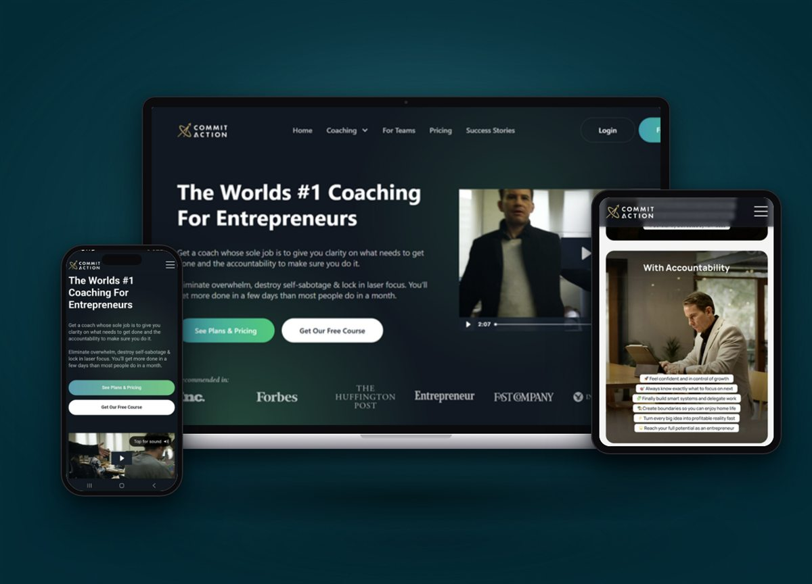
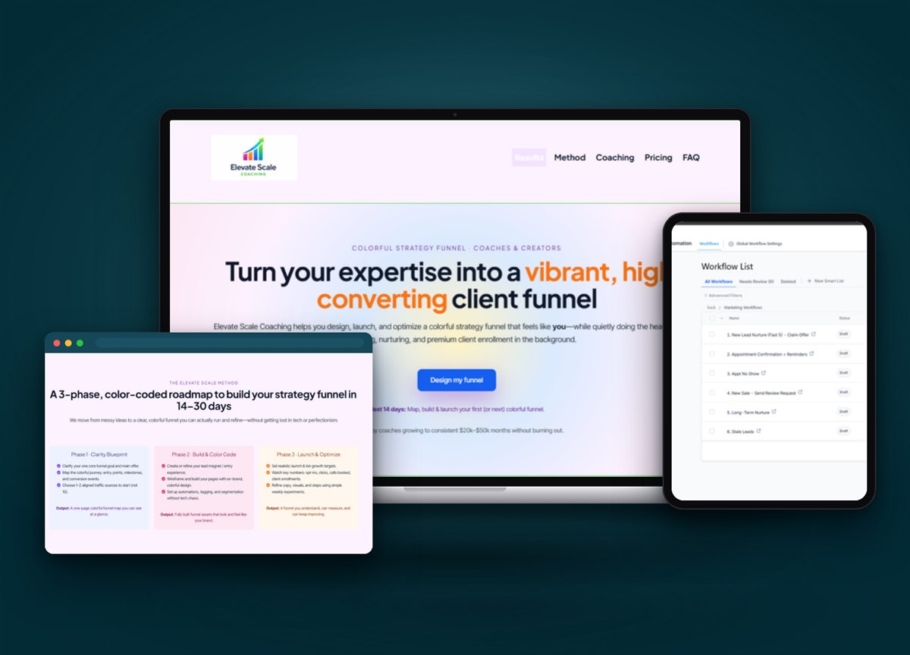
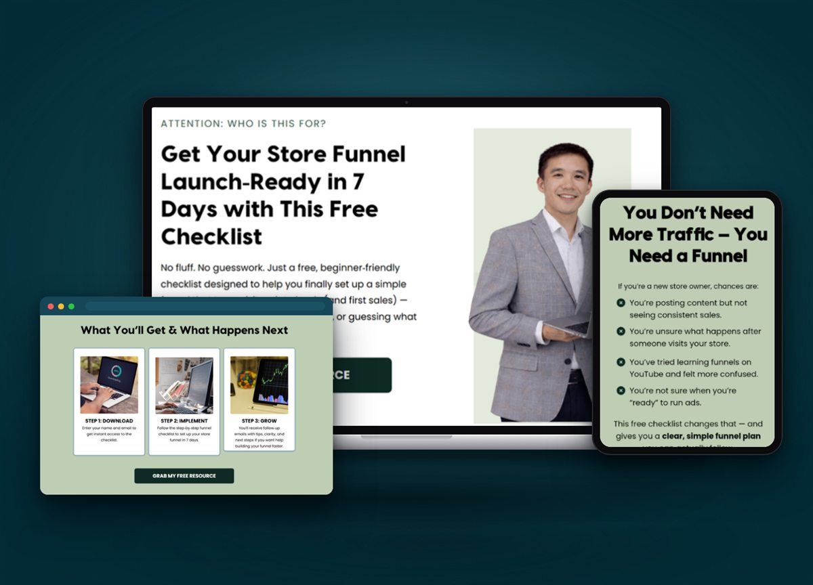
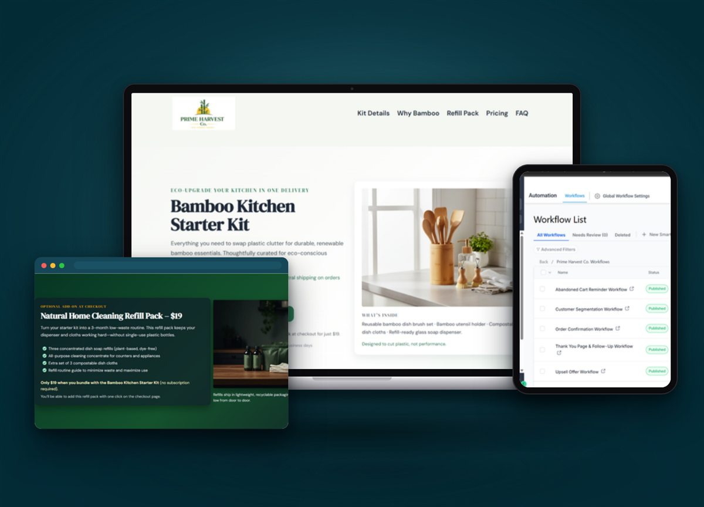

- Concept
- Funnel · Systeme.io
Coaching funnel
A 3-step opt-in funnel built for authority positioning — designed to turn cold traffic into booked calls.
- Opt-in page
- Authority content
- Call booking
Work / Lab
These aren't client projects. They're self-directed builds where I test funnel structures and automation logic before using them with clients — clearly labeled, so you always know which is which.

A 3-step opt-in funnel built for authority positioning — designed to turn cold traffic into booked calls.

A 4-step sales funnel with automated follow-up, built to recover abandoned carts and push repeat purchases.

A booking funnel with automated reminders and no-show follow-up, built to keep calendars full.

Funnel, CRM and workflow automation connected into one system — built to scale without adding headcount.